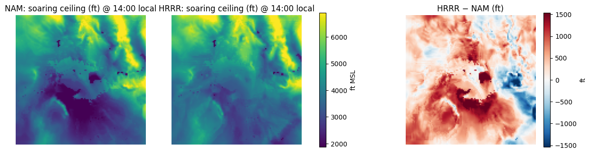
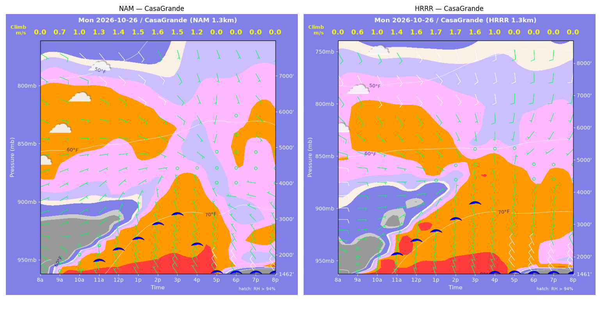
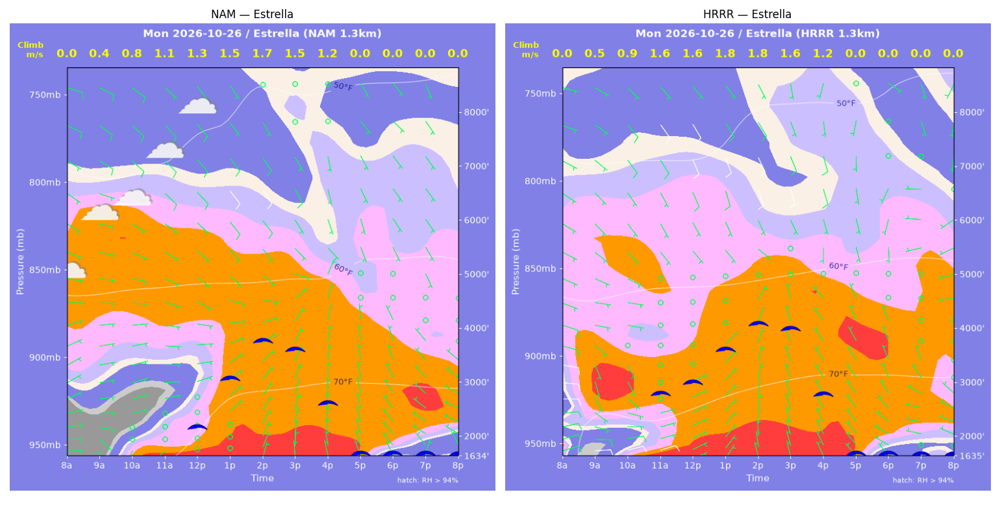
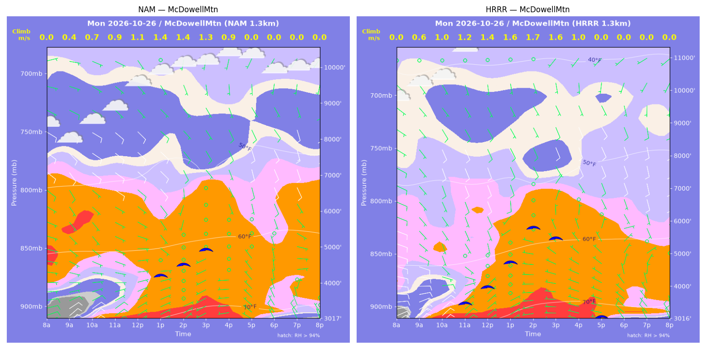
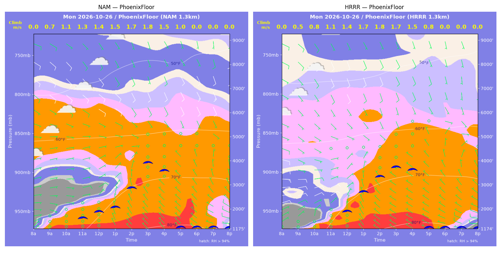
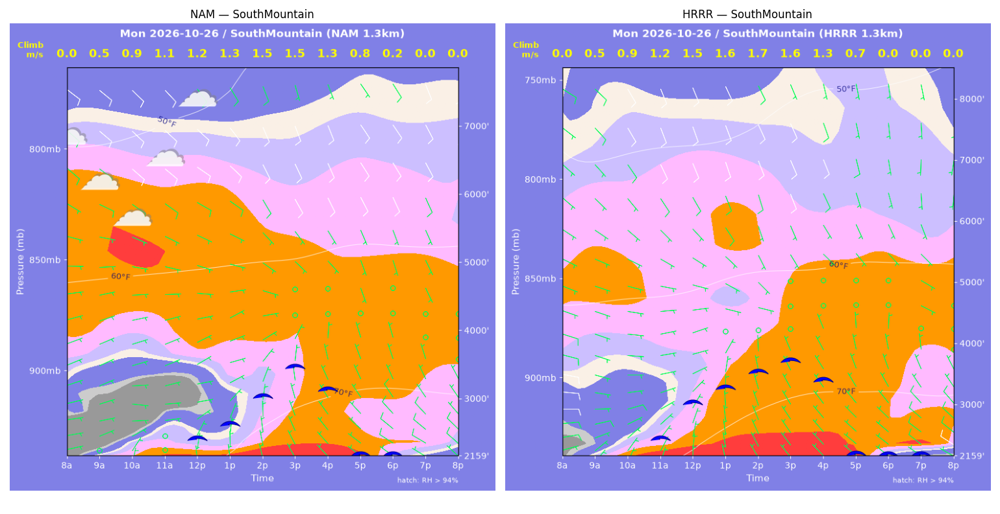
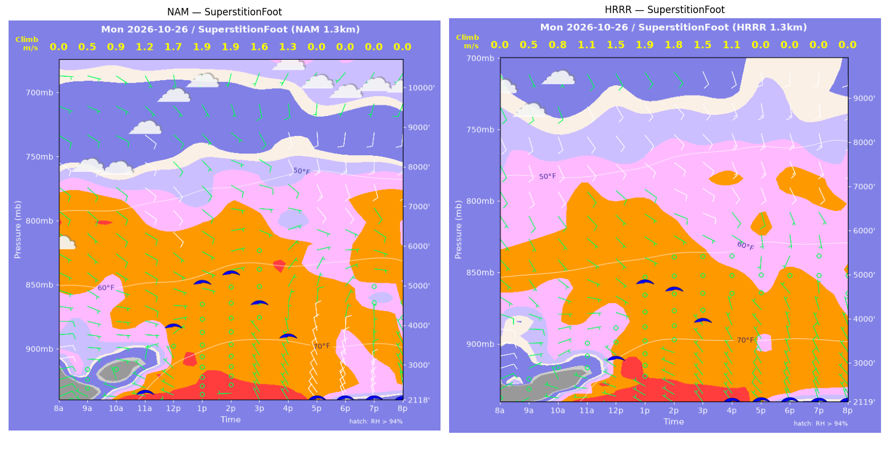
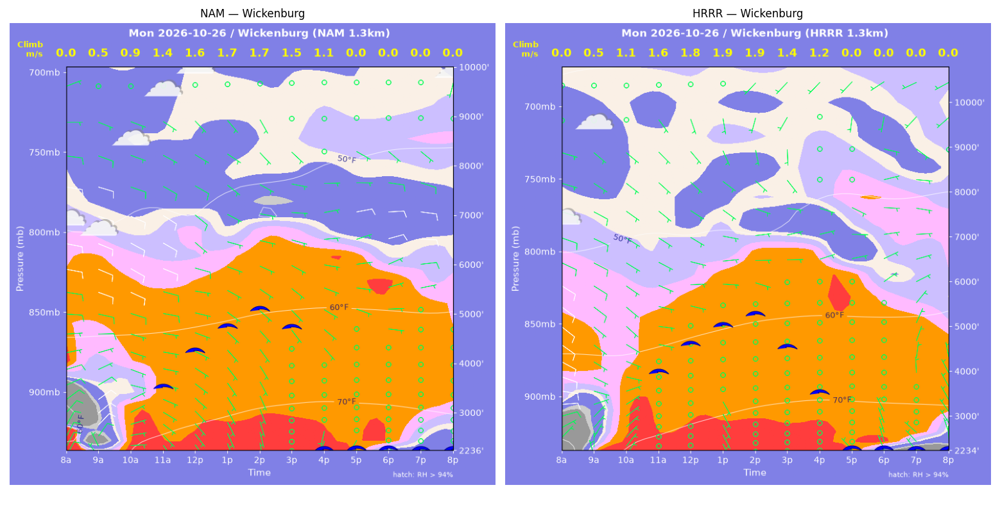

../runs/ab-phoenix-nam — model nam, cycle 2026-10-25 18z, dx 1.3333333740234374 km, 13 hours, grid 114×114../runs/ab-phoenix-hrrr — model hrrr, cycle 2026-10-25 18z, dx 1.3333333740234374 km, 13 hours, grid 114×114Grids identical; afternoon = 12:00–17:59 local (UTC-7). Δ = HRRR − NAM.
| Site | terrain ft | BL top (AGL) med|Δ| / bias (ft) | w* med|Δ| / bias (fpm) | Soaring ceiling med|Δ| / bias (ft) | BL wind speed med|Δ| / bias (kt) | BL wind dir med|Δ| / bias (deg) | 2 m temperature med|Δ| / bias (F) | Sfc LCL (AGL) med|Δ| / bias (ft) | Sensible heat flux med|Δ| / bias (W/m2) |
|---|---|---|---|---|---|---|---|---|---|
| PhoenixFloor | 1175 | 209 / +278 | 15 / +3 | 113 / +165 | 2 / -2 | 14 / -4 | 1 / +1 | 1937 / +2082 | 5 / -6 |
| SouthMountain | 2160 | 594 / +632 | 21 / +24 | 371 / +369 | 1 / -1 | 23 / +8 | 2 / +2 | 2548 / +2552 | 8 / -10 |
| SuperstitionFoot | 2119 | 853 / -823 | 22 / -24 | 618 / -647 | 1 / -1 | 16 / -10 | 0 / -0 | 1329 / +1364 | 5 / -7 |
| Estrella | 1635 | 523 / +666 | 18 / +26 | 344 / +365 | 2 / -1 | 12 / +7 | 1 / +1 | 2049 / +2002 | 10 / +18 |
| Wickenburg | 2236 | 220 / +219 | 24 / +14 | 237 / +307 | 1 / -0 | 16 / +12 | 1 / +0 | 2120 / +2122 | 25 / +18 |
| CasaGrande | 1462 | 453 / +514 | 23 / +9 | 339 / +122 | 2 / -0 | 31 / -4 | 1 / +1 | 1934 / +2017 | 9 / -3 |
| McDowellMtn | 3017 | 732 / +741 | 44 / +41 | 513 / +546 | 2 / +1 | 41 / +44 | 1 / +1 | 2452 / +2426 | 38 / +30 |
| Metric | n | median |Δ| | p90 |Δ| | bias |
|---|---|---|---|---|
| BL top (AGL) (ft) | 42 | 475 | 1038 | +318 |
| w* (fpm) | 42 | 23 | 54 | +13 |
| Soaring ceiling (ft) | 42 | 339 | 854 | +175 |
| BL wind speed (kt) | 42 | 1 | 3 | -1 |
| BL wind dir (deg) | 42 | 17 | 86 | +7 |
| 2 m temperature (F) | 42 | 1 | 2 | +1 |
| Sfc LCL (AGL) (ft) | 42 | 2101 | 2587 | +2081 |
| Sensible heat flux (W/m2) | 42 | 9 | 41 | +6 |
diffmap_tol.png| local | BL top NAM/HRRR ft | w* NAM/HRRR fpm | ceiling NAM/HRRR ft | BL wind NAM/HRRR | T2 NAM/HRRR F | HFX NAM/HRRR |
|---|---|---|---|---|---|---|
| 08:00 | 0 / 0 | 0 / 0 | 1175 / 1175 | 3kt@036 / 1kt@028 | 60 / 58 | 0 / 0 |
| 09:00 | 789 / 285 | 144 / 92 | 1175 / 1175 | 3kt@105 / 2kt@025 | 65 / 63 | 58 / 41 |
| 10:00 | 1222 / 593 | 208 / 156 | 1175 / 1175 | 6kt@097 / 3kt@011 | 68 / 68 | 113 / 99 |
| 11:00 | 1428 / 1145 | 247 / 219 | 1680 / 1175 | 5kt@078 / 6kt@048 | 71 / 73 | 164 / 143 |
| 12:00 | 1655 / 1724 | 273 / 269 | 1917 / 1930 | 8kt@057 / 6kt@050 | 74 / 77 | 192 / 178 |
| 13:00 | 1853 / 2764 | 287 / 325 | 2071 / 2712 | 6kt@044 / 3kt@029 | 78 / 80 | 200 / 196 |
| 14:00 | 2966 / 3616 | 327 / 349 | 2830 / 3302 | 4kt@043 / 3kt@131 | 81 / 82 | 185 / 186 |
| 15:00 | 4550 / 4309 | 348 / 341 | 3846 / 3666 | 6kt@143 / 3kt@157 | 82 / 83 | 146 / 146 |
| 16:00 | 4612 / 4789 | 297 / 293 | 3508 / 3554 | 4kt@144 / 5kt@154 | 82 / 83 | 90 / 83 |
| 17:00 | 4119 / 4222 | 191 / 161 | 1175 / 1175 | 7kt@156 / 1kt@041 | 82 / 83 | 27 / 16 |
| 18:00 | 2735 / 1225 | 0 / 0 | 1175 / 1175 | 4kt@338 / 6kt@309 | 81 / 80 | -1 / -2 |
| 19:00 | 910 / 581 | 0 / 0 | 1175 / 1175 | 7kt@302 / 7kt@298 | 80 / 78 | -2 / -5 |
| 20:00 | 569 / 314 | 0 / 0 | 1175 / 1175 | 8kt@295 / 8kt@283 | 78 / 75 | -2 / -5 |
| local | BL top NAM/HRRR ft | w* NAM/HRRR fpm | ceiling NAM/HRRR ft | BL wind NAM/HRRR | T2 NAM/HRRR F | HFX NAM/HRRR |
|---|---|---|---|---|---|---|
| 08:00 | 0 / 0 | 0 / 0 | 2160 / 2159 | 4kt@075 / 7kt@075 | 60 / 64 | 0 / 0 |
| 09:00 | 347 / 342 | 102 / 95 | 2160 / 2159 | 3kt@096 / 8kt@068 | 63 / 67 | 46 / 39 |
| 10:00 | 626 / 760 | 181 / 182 | 2160 / 2159 | 4kt@096 / 8kt@069 | 64 / 68 | 144 / 123 |
| 11:00 | 922 / 1147 | 222 / 239 | 2160 / 2517 | 5kt@100 / 6kt@064 | 67 / 70 | 182 / 185 |
| 12:00 | 955 / 1808 | 242 / 296 | 2472 / 3071 | 5kt@069 / 3kt@059 | 70 / 73 | 230 / 223 |
| 13:00 | 1172 / 2085 | 265 / 317 | 2657 / 3290 | 4kt@049 / 3kt@063 | 72 / 75 | 247 / 238 |
| 14:00 | 1770 / 2458 | 294 / 325 | 3043 / 3526 | 3kt@046 / 3kt@098 | 74 / 76 | 223 / 219 |
| 15:00 | 2477 / 2840 | 303 / 313 | 3446 / 3684 | 2kt@092 / 2kt@125 | 75 / 77 | 176 / 170 |
| 16:00 | 2369 / 2869 | 258 / 264 | 3108 / 3366 | 2kt@104 / 1kt@049 | 76 / 77 | 114 / 101 |
| 17:00 | 1179 / 1653 | 149 / 140 | 2160 / 2159 | 6kt@335 / 6kt@348 | 76 / 76 | 44 / 26 |
| 18:00 | 252 / 723 | 48 / 0 | 2160 / 2159 | 7kt@295 / 6kt@317 | 75 / 75 | 7 / -4 |
| 19:00 | 609 / 667 | 0 / 0 | 2160 / 2159 | 7kt@311 / 7kt@305 | 74 / 73 | -3 / -4 |
| 20:00 | 476 / 528 | 0 / 0 | 2160 / 2159 | 7kt@308 / 8kt@308 | 73 / 71 | -3 / -5 |
| local | BL top NAM/HRRR ft | w* NAM/HRRR fpm | ceiling NAM/HRRR ft | BL wind NAM/HRRR | T2 NAM/HRRR F | HFX NAM/HRRR |
|---|---|---|---|---|---|---|
| 08:00 | 0 / 0 | 0 / 0 | 2119 / 2119 | 8kt@065 / 2kt@032 | 58 / 66 | 0 / 0 |
| 09:00 | 261 / 262 | 105 / 106 | 2119 / 2119 | 5kt@293 / 3kt@250 | 69 / 66 | 68 / 69 |
| 10:00 | 684 / 476 | 178 / 156 | 2119 / 2119 | 2kt@345 / 2kt@339 | 69 / 69 | 126 / 122 |
| 11:00 | 1092 / 883 | 229 / 210 | 2366 / 2119 | 3kt@033 / 2kt@324 | 73 / 73 | 171 / 160 |
| 12:00 | 3224 / 2091 | 342 / 286 | 3988 / 3128 | 7kt@119 / 4kt@112 | 77 / 77 | 194 / 173 |
| 13:00 | 4726 / 4441 | 378 / 365 | 5053 / 4816 | 8kt@126 / 7kt@123 | 79 / 79 | 180 / 170 |
| 14:00 | 5112 / 4244 | 373 / 350 | 5264 / 4623 | 7kt@093 / 8kt@113 | 80 / 80 | 159 / 157 |
| 15:00 | 4371 / 3534 | 320 / 298 | 4514 / 3917 | 5kt@102 / 6kt@114 | 80 / 79 | 118 / 116 |
| 16:00 | 4145 / 3009 | 252 / 218 | 3669 / 2119 | 5kt@057 / 4kt@005 | 79 / 79 | 60 / 53 |
| 17:00 | 2109 / 1431 | 0 / 0 | 2119 / 2119 | 9kt@358 / 7kt@328 | 77 / 77 | -6 / -5 |
| 18:00 | 1219 / 766 | 0 / 0 | 2119 / 2119 | 12kt@357 / 7kt@345 | 73 / 73 | -14 / -5 |
| 19:00 | 816 / 822 | 0 / 0 | 2119 / 2119 | 9kt@004 / 8kt@340 | 72 / 71 | -19 / -6 |
| 20:00 | 361 / 547 | 0 / 0 | 2119 / 2119 | 5kt@000 / 6kt@324 | 70 / 70 | -15 / -4 |
| local | BL top NAM/HRRR ft | w* NAM/HRRR fpm | ceiling NAM/HRRR ft | BL wind NAM/HRRR | T2 NAM/HRRR F | HFX NAM/HRRR |
|---|---|---|---|---|---|---|
| 08:00 | 0 / 0 | 0 / 0 | 1635 / 1636 | 4kt@086 / 9kt@077 | 57 / 69 | 0 / 0 |
| 09:00 | 227 / 272 | 84 / 106 | 1635 / 1636 | 4kt@145 / 12kt@084 | 66 / 72 | 40 / 67 |
| 10:00 | 677 / 698 | 159 / 185 | 1635 / 1636 | 3kt@090 / 6kt@084 | 67 / 74 | 91 / 141 |
| 11:00 | 1099 / 2276 | 214 / 306 | 1635 / 2827 | 4kt@087 / 2kt@098 | 71 / 75 | 136 / 195 |
| 12:00 | 1535 / 2515 | 252 / 321 | 2209 / 3017 | 5kt@081 / 1kt@087 | 74 / 77 | 160 / 205 |
| 13:00 | 2752 / 3323 | 304 / 349 | 3067 / 3593 | 4kt@101 / 2kt@092 | 77 / 78 | 158 / 200 |
| 14:00 | 3678 / 4045 | 336 / 354 | 3737 / 4042 | 5kt@138 / 8kt@155 | 78 / 79 | 160 / 172 |
| 15:00 | 3725 / 4201 | 302 / 320 | 3556 / 3940 | 5kt@139 / 7kt@152 | 79 / 79 | 114 / 122 |
| 16:00 | 3627 / 3695 | 232 / 237 | 2562 / 2730 | 4kt@138 / 3kt@163 | 79 / 79 | 53 / 56 |
| 17:00 | 1355 / 2890 | 0 / 0 | 1635 / 1636 | 5kt@349 / 3kt@339 | 77 / 78 | -1 / -2 |
| 18:00 | 324 / 85 | 0 / 0 | 1635 / 1636 | 5kt@318 / 3kt@330 | 72 / 72 | -2 / -1 |
| 19:00 | 85 / 84 | 0 / 0 | 1635 / 1636 | 2kt@008 / 1kt@036 | 71 / 72 | -1 / -0 |
| 20:00 | 264 / 84 | 0 / 0 | 1635 / 1636 | 3kt@317 / 2kt@055 | 70 / 71 | -1 / -1 |
| local | BL top NAM/HRRR ft | w* NAM/HRRR fpm | ceiling NAM/HRRR ft | BL wind NAM/HRRR | T2 NAM/HRRR F | HFX NAM/HRRR |
|---|---|---|---|---|---|---|
| 08:00 | 0 / 0 | 0 / 0 | 2236 / 2234 | 9kt@029 / 4kt@296 | 56 / 55 | 0 / 0 |
| 09:00 | 340 / 412 | 91 / 96 | 2236 / 2234 | 8kt@036 / 6kt@036 | 65 / 66 | 32 / 32 |
| 10:00 | 1407 / 2046 | 182 / 223 | 2236 / 2234 | 4kt@107 / 5kt@113 | 72 / 72 | 62 / 82 |
| 11:00 | 2993 / 3388 | 272 / 308 | 3572 / 4022 | 8kt@100 / 5kt@101 | 74 / 74 | 100 / 133 |
| 12:00 | 3716 / 4037 | 319 / 353 | 4270 / 4630 | 8kt@101 / 6kt@102 | 75 / 75 | 131 / 168 |
| 13:00 | 4333 / 4513 | 341 / 373 | 4740 / 5010 | 7kt@103 / 6kt@086 | 76 / 76 | 136 / 177 |
| 14:00 | 4920 / 4939 | 339 / 366 | 5067 / 5236 | 6kt@101 / 7kt@082 | 77 / 77 | 118 / 153 |
| 15:00 | 4853 / 4931 | 297 / 276 | 4697 / 4492 | 6kt@091 / 7kt@077 | 77 / 77 | 80 / 66 |
| 16:00 | 4562 / 4821 | 219 / 232 | 2236 / 3485 | 7kt@080 / 7kt@079 | 77 / 77 | 33 / 40 |
| 17:00 | 484 / 942 | 0 / 0 | 2236 / 2234 | 2kt@189 / 2kt@313 | 75 / 75 | -1 / -1 |
| 18:00 | 84 / 84 | 0 / 0 | 2236 / 2234 | 2kt@258 / 5kt@330 | 71 / 69 | -1 / -3 |
| 19:00 | 84 / 84 | 0 / 0 | 2236 / 2234 | 1kt@104 / 4kt@327 | 70 / 67 | -0 / -2 |
| 20:00 | 84 / 276 | 0 / 0 | 2236 / 2234 | 3kt@060 / 5kt@341 | 67 / 65 | -1 / -8 |
| local | BL top NAM/HRRR ft | w* NAM/HRRR fpm | ceiling NAM/HRRR ft | BL wind NAM/HRRR | T2 NAM/HRRR F | HFX NAM/HRRR |
|---|---|---|---|---|---|---|
| 08:00 | 0 / 0 | 0 / 0 | 1462 / 1462 | 2kt@128 / 1kt@077 | 57 / 56 | 0 / 0 |
| 09:00 | 565 / 323 | 139 / 117 | 1462 / 1462 | 4kt@142 / 1kt@315 | 63 / 63 | 73 / 76 |
| 10:00 | 948 / 873 | 202 / 204 | 1462 / 1462 | 3kt@074 / 4kt@025 | 67 / 68 | 134 / 150 |
| 11:00 | 1237 / 1533 | 247 / 271 | 1901 / 2139 | 3kt@048 / 4kt@052 | 71 / 73 | 189 / 201 |
| 12:00 | 1547 / 1997 | 280 / 310 | 2186 / 2523 | 4kt@024 / 4kt@057 | 75 / 76 | 221 / 233 |
| 13:00 | 1912 / 2367 | 302 / 329 | 2450 / 2793 | 4kt@025 / 3kt@053 | 78 / 79 | 225 / 237 |
| 14:00 | 2515 / 2932 | 317 / 335 | 2828 / 3133 | 3kt@021 / 2kt@047 | 80 / 81 | 198 / 202 |
| 15:00 | 3114 / 3881 | 304 / 322 | 3084 / 3602 | 4kt@123 / 1kt@166 | 81 / 82 | 142 / 136 |
| 16:00 | 3004 / 4044 | 232 / 194 | 2234 / 1462 | 2kt@351 / 4kt@180 | 81 / 81 | 65 / 29 |
| 17:00 | 1774 / 1731 | 0 / 0 | 1462 / 1462 | 5kt@331 / 8kt@344 | 78 / 77 | -6 / -8 |
| 18:00 | 558 / 590 | 0 / 0 | 1462 / 1462 | 8kt@330 / 10kt@328 | 72 / 70 | -8 / -12 |
| 19:00 | 354 / 427 | 0 / 0 | 1462 / 1462 | 9kt@323 / 11kt@324 | 70 / 69 | -10 / -13 |
| 20:00 | 310 / 338 | 0 / 0 | 1462 / 1462 | 9kt@319 / 10kt@320 | 69 / 67 | -11 / -16 |
| local | BL top NAM/HRRR ft | w* NAM/HRRR fpm | ceiling NAM/HRRR ft | BL wind NAM/HRRR | T2 NAM/HRRR F | HFX NAM/HRRR |
|---|---|---|---|---|---|---|
| 08:00 | 0 / 0 | 0 / 0 | 3017 / 3017 | 7kt@066 / 8kt@047 | 58 / 62 | 0 / 0 |
| 09:00 | 230 / 447 | 72 / 112 | 3017 / 3017 | 9kt@042 / 11kt@052 | 63 / 65 | 21 / 46 |
| 10:00 | 519 / 1001 | 133 / 193 | 3017 / 3017 | 8kt@059 / 7kt@081 | 66 / 67 | 63 / 108 |
| 11:00 | 892 / 1578 | 180 / 241 | 3017 / 3526 | 5kt@067 / 3kt@118 | 68 / 69 | 93 / 135 |
| 12:00 | 1513 / 2177 | 219 / 276 | 3017 / 4012 | 4kt@084 / 4kt@159 | 70 / 71 | 100 / 148 |
| 13:00 | 2776 / 3188 | 268 / 313 | 4219 / 4728 | 7kt@140 / 5kt@199 | 72 / 73 | 100 / 147 |
| 14:00 | 3365 / 4776 | 270 / 338 | 4501 / 5759 | 5kt@183 / 8kt@160 | 73 / 74 | 84 / 124 |
| 15:00 | 4442 / 4580 | 265 / 307 | 4907 / 5424 | 3kt@173 / 6kt@157 | 74 / 75 | 59 / 97 |
| 16:00 | 2827 / 3851 | 175 / 206 | 3017 / 3017 | 1kt@197 / 2kt@015 | 73 / 74 | 25 / 34 |
| 17:00 | 1196 / 1996 | 0 / 0 | 3017 / 3017 | 5kt@323 / 6kt@313 | 72 / 73 | -2 / -2 |
| 18:00 | 713 / 643 | 0 / 0 | 3017 / 3017 | 7kt@347 / 6kt@310 | 68 / 68 | -6 / -6 |
| 19:00 | 372 / 586 | 0 / 0 | 3017 / 3017 | 5kt@344 / 6kt@324 | 67 / 67 | -7 / -7 |
| 20:00 | 270 / 409 | 0 / 0 | 3017 / 3017 | 6kt@335 / 6kt@355 | 66 / 65 | -6 / -7 |
montage_PhoenixFloor.pngmontage_SouthMountain.pngmontage_SuperstitionFoot.pngmontage_Estrella.pngmontage_Wickenburg.pngmontage_CasaGrande.pngmontage_McDowellMtn.png